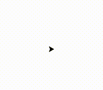

Hi students, welcome to the lesson page for Intro to Python at Code for Fun!
These lessons are intended to be used as a follow-up after each week’s in-class lesson. So Lesson 1 covers the same topics as the 1st week’s class, Lesson 2 covers the same topics of the 2nd week’s class, and so on….
Each lesson will be posted online after the in-class lesson. I recommend taking just 1 hour out of your week to go over these online lessons, so that you can refresh your programming knowledge.
Also, I encourage you to look online for other resources to help you on your journey to becoming an expert programmer.
Now we are going to be working with turtles. Not the green animals with the shells, but a python module called Turtle. Modules allow us to use cool features that are not part of python’s standard library. The Tutrle module will allow us to draw cool shapes on our screens.
We are going to be:
Importing the Turtle module to draw on our screens
Using if statements to conditionally execute code
Using for loops to execute a piece of code a specific number of times
Turtle Time
2-1 Bringing up the Canvas
To begin, let’s just bring the turtle on to the screen. We make the turtle by assigning a variable t to the return of the turtle module’s Pen function. t is a black arrow that starts off facing right on the canvas.
1
2
3
import turtle
t = turtle.Pen()
2-2 I like to move it, move it!
Now lets make the turtle move. We can do so using functions that are included in the turtle module. Specifically, the forward function moves t the specified number of pixels forward. So writing t.forward(50) will move our turtle 50 pixels in the direction that it is facing. The left() function will rotate the turtle by the specified number of degrees to the left. So writing t.left(90) will rotate our turtle to the left by 90 degrees.
1
2
3
4
5
6
7
8
9
10
11
12
13
import turtle
t = turtle.Pen()
t.forward(50)
t.left(90)
t.forward(50)
t.left(90)
t.forward(50)
t.left(90)
t.forward(50)
t.left(90)

2-3 Repetition using For loops
Making a square was pretty simple, but the code we used pretty repetitive. Four times, we had to tell the turtle to move forward, then turn left. So instead of listing off all of these commands repeatedly, we can use a for loop. A for loop tells a block of code to execute a certain number of times. In our case, we want to execute the move forward - turn left command 4 times. A for loop to execute something y number of times, looks like this:
1
for x in range(0,y)
So to make our square using a for loop, we can change our code to look like this:
1
2
3
4
5
6
7
import turtle
t = turtle.Pen()
for x in range(0,4):
t.forward(50)
t.left(90)
2-4 If Statements
Sometimes we only want to execute code based on a certain condition. This is whre If Statement can be very useful. A basic If statement will check a condition, and if it is true, then it will execute the code in its code block. Lets try a simple example:
1
2
3
4
age = 13
if age < 17:
print("You can't watch rated R movies!")
This code will not execute as is, but try changing the value we assigned to the age variable, to an age of 17 or higher!
2-5 Elif Statements
Elif statements are added after an If Statement and only execute when the preceding If-statement is false. Try out the following code to see how it works.
1
2
3
4
5
6
7
age = 25
if age < 17:
print("Dont watch rated R movies!")
elif age < 35:
print("You can watch rated R movies, but you are not old enough to run for president")
2-6 Else Statements
Else statements will execute when the preceding if statement and elif stements fails. It is the last condition checked in the If-Elif-Else chain. Try out the following code to see the use of Else statements. Change the age value to test out which stements are executed.
1
2
3
4
5
6
7
8
9
10
age = 25
if age < 17:
print("Dont watch rated R movies!")
elif age < 35:
print("You can watch rated R movies, but you are not old enough to run for president")
else:
print("You can watch rated R movies and run for president!")
2-7 Using If-Elif-Else Statements to enhance our Turtle
If-Elif-Else statments can be used for far more than simply checking what you are legally allowed to do. We can use it to customize our turtle drawing! Lets go back to the code from lesson 2-3, where we use a for loop to make a square. Remember hoe we crafted our for loo to execute four times:
1
for x in range(0,4)
You might be wondering about the x in the for loop. this is called the iterator and for each execution of the loop, the iterator increases by 1. So in this case it starts at 0 and increases by 1 until it gets to 3. We can check the value of the iterator at each loop, to do something specific for each loop.
Specifically, I want to change the color of our turtle at each stage in the loop. We can use an If-Elif-Else statement to check the value of the iterator, and specify the color based on the value.
The first line of the square I want to be blue, the second line of the square I want to be yellow, the third line of the square I want to be red, and the fourth and final line of the square I want to be green. Line 1 : Blue Line 2 : Yellow Line 3 : Red Line 4 : Green
So I am going to modify the code from 2-3 to include an If-Elif-Else statment that specifies these colors based on the value of the iterator.
This lesson is all about the basics. We are going to accomplish alot! We are going to be:
Printing so we can see the output of our program
Assigning number values to variables using Ints
Assigning text values to variables using Strings
Performing mathematical operations on variables
Changing variable types using Typecasting
Creating and accessing elements in a List
Adding and deleting items from the list
This may seem like a lot to handle, but you will pick up on it pretty quickly. So lets get started.
Output and Variables
1-1 Hello World - Getting Output From Our Program
The famous first program that every coder creates when learning a new language. Hello World! This simple one line program shows us how to produce output to the console. It also ensures that we have Python properly installed and ready to go.
1
print("Hello World")
1-2 Our First Variable - Assigning Int Values
Variables in programming is a lot like algebra. We can use a variable to hold a value. In this case, we will use the variable ‘mathResult’ to hold the value of the addition of two Ints. Integers are whole numbers. Ints are simple, yet very useful in programming.
1
2
3
mathResult = 2+2
print(mathResult)
1-3 Multiple Variables
Lets try making multiple variables and add them. Try using different types of math operations like - or / or *
1
2
3
4
5
favoriteNumber = 14
age = 13
combo = favoriteNumber + age
print(combo)
1-4 Combining Strings Together - Concatenation
We can use the + sign to add or concatenate strings together. Try making a greeting using your name and your favorite food!
1
2
3
4
5
name = "Pat"
favoriteFood = "Pizza"
greeting = "Hello my name is " + name + " and my favorite food is " + favoriteFood
print(greeting)
1-5: Type Casting Variables
Let’s see what happens when we try adding an Int type to a string type to create a greeting using a number:
1
2
3
4
5
name = "Pat"
age = 14
greeting = "Hello my name is " + name + " and I am " + age + " years old"
print(greeting)
HOLD UP!
Why didn’t the above program work!? Well our age variable is set to 14, so it has type Int. So we add it to the String in greeting, we are concatenating an Int type to a String type, which is a Type error. We cannot do operations on different Types. So we must change the Int type to a String type using TypeCasting .
We can doing this by wrapping the age variable in the str() function, like so: str(age) So lets change line 3 in our program to look like this:
1
greeting = "Hello my name is " + name + " and I am " + str(age) + " years old"
Lists are simple way of grouping variables together. Lists are initialized using square brackets [] and items in the list are sperated by commas. Lets start by making a list of good foods:
We can see that the print statement prints the whole list, but what if we want to access only item in the list? This is where lists get a little tricky. The index of the list starts at 0. So the first item in our favoriteFoods list is accessed by typing favoriteFoods[0]. These second item is accessed by favoriteFoods[1], and so on. Lets try it out:
Now that we have access to individual items in the list, we can change items at any index. Lets say we like Chow Mein better than Chips, we can change the item at index 2 of the list.